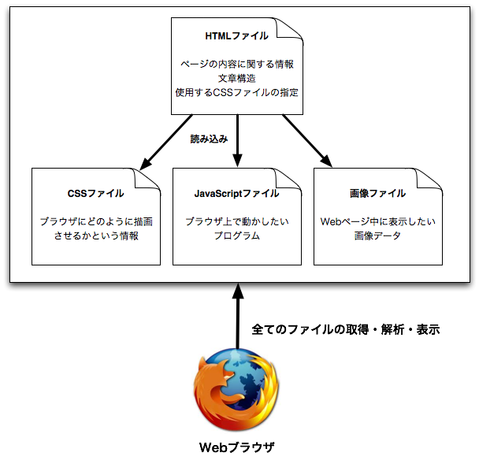
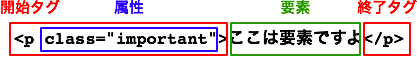
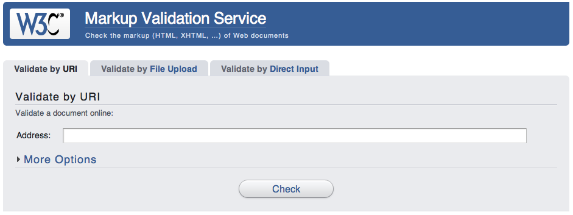

第6回：HTMLとCSSの内部構造を理解する
前回ではWebページのソースコードを表示し，いろいろな値をいじると表示が変化することを試した． 今回はそもそもWebページはどのように作られているのか，詳しく学んでいく．
HTMLとCSSの役割
人間が紙に印刷された文章を読む時は，文字の大きさや色，配置などで，見出しや本文を何気なく認識することができる． しかしコンピュータにとっては，このように曖昧な基準で見出しや本文を解釈することがとても難しい．
そこで，コンピュータが解釈しやすいように文章の構造を明示的に記述したものが，HTML（Hyper Text Markup Language）である． また，文字の大きさや配置，色など，文章の見栄えに関する点は，CSS（Cascading Style Sheets）という言語で記述する．
HTMLとCSSで記述されたWebページは，FirefoxやSafariなどのWebブラウザというプログラムでまず解釈される． Webブラウザは，解釈した結果を人間が見やすい形に整形して表示してくれる． Webブラウザは，URLで指定されたHTMLファイルをまず最初に取得する．その後，取得したHTMLファイルを解析し，Webページの表示に必要なファイルがあれば，追加でファイルを取得する．
HTMLタグ
HTMLはタグによって記述する．ここではタグとその要素について，詳しく解説する．
タグ（Tag）
HTMLは，タグと呼ばれる目印で文章の構造を囲うことで記述していく． タグは"<"から">"で命令文を囲ったものであり，すべて半角英数字で記述する．
<html>
タグには開始タグと終了タグの2種類があり，タグ名の先頭にスラッシュを付けたものが終了タグである．また，「<!--」と「-->」で囲まれた部分はコメントと呼ばれ，Webブラウザが描画しない．コメントはHTMLファイル内に何か覚書を書きたい時や，他人に見せる時のことを考えた説明文を挿入するのに使う．
<html> </html>
開始タグと終了タグは基本的にペアで使用するが，br（改行）やimg（画像）などタグで囲む部分の文字列（後述する要素）がない種類も存在する．その場合は，開始タグと終了タグを合わせて以下の様に記述することができる．
<br />
要素（Element）
同じ命令の開始タグと終了タグで囲まれた中身が，そのタグの影響範囲であり，要素と呼ぶ．要素の中に別のタグを記述することも可能で，タグの中にタグがあるといった階層構造の事を入れ子構造とも呼ぶ．要素がブラウザどのように解釈されるかは，タグの種類に依存する
例として，段落を表すpタグ（paragraph：段落）を用いると，要素の中を一つの段落として文章を記述できる．
<!DOCTYPE html>
<html>
<head>
<title>02-01</title>
</head>
<body>
<p>段落１，これは一段落目です．Pタグでは通常タグの初めと終わりが改行されます．
長い文章は自動的に折り返されるようになっています．</p>
<p>段落２．段落の途中で改行したい場合は，brタグを使うことで
強制的に改行することができます．<br />こんな感じになります．</p>
<p>段落３．HTMLの
中で
いくら改行しても，ブラウザは改行してくれないので注意</p>
</body>
</html>
ブラウザで開く
属性（Attribute）
開始タグの中に，付加的な情報として属性（Attribute）を指定することができる．指定できる属性はタグによっても異なるが，一般的な使い道としては，タグに指定したCSSクラスを指定することで，同じタグでも表示方法を分けたり，ハイパーリンクのリンク先URLを指定したりするといったものがある．
属性を指定するには，開始タグのタグ名の後に半角スペースを入れた後ろに「属性名="値"」と記述する．例えば，pタグにクラス「important」を付けたければ以下のように記述すれば良い．
<!DOCTYPE html>
<html>
<head>
<title>02-02</title>
<link type="text/css" href="lecture02-02.css" rel="stylesheet">
</head>
<body>
<p class="important">この要素はimportantクラスが適用される</p>
<p>この要素には適用されない</p>
</body>
</html>
ブラウザで開く
ここまでをまとめると，以下の図の通りになる．
ここまでにはpタグとbrタグの例しか出していないが，他にもHTMLで使えるタグは沢山定義されているので，以下のサイトなどを参考にすると良い．
タグは基本的には必要に応じて覚えていくのが良いが，良く使うタグとして，以下のタグは覚えておくと良い．各タグの使い方などは，HTML5タグリファレンスを読むか，実際にそのタグが使われているWebページのソースコードを読むと良い．
- headタグ内に書けるタグ
- titleタグ：要素をそのページのページタイトル（ブラウザウィンドウに表示される文字列）とする．
- metaタグ：そのWebページに関する詳細情報を記述する．文字コードの指定などに良く使われる．詳細は<meta>- HTMLタグリファレンスを参考に
- linkタグ：そのWebページに関連する外部ファイルを記述する．CSSやRSSファイルURLはこのタグで指定する． rel属性にファイルタイプ（stylesheetやRSSフィード），href属性にファイルのURLを指定する．
- bodyタグ内に書けるタグ
- articleタグ：一つの完結する記事全体を囲む．本文全体はこれで囲むと良い．
- asideタグ：補足的な情報を囲む．サイドバーなどはこのタグで囲むと良い．
- navタグ：ナビゲーション情報を囲む．
- sectionタグ：一纏まりの情報を囲む．articleやasideよりも汎用的なタグ．
- h1,h2...h6タグ：見出しを記述する．数字が少ないほど大見出しで，大きいほど小見出しになる
- pタグ：要素を1つの段落として記述する
- brタグ：強制的に改行する．要素を持たない
- aタグ：ハイパーリンクを記述するのに使う．リンク先URLはhref属性として指定し，要素がリンク文字列となる
- imgタグ：画像を表示するときに使う．画像のURLをsrc属性として指定し，要素は持たない
- ul, ol, liタグ：リストを列挙するときに使う．このタグ一覧はul，liタグを用いて書かれている
- table, tr, tdタグ：表を書きたい時に使う
- spanタグ：汎用のインライン要素．CSSと組み合わせて文章の中の一部の文字列の色を変えたい時などに重宝する
- divタグ：汎用のブロック要素．CSSと組み合わせてあるブロック範囲を指定したい時に重宝する
HTMLの必須要素
前後してしまうが，HTMLは以下のタグ構造を満たす必要がある．
<!DOCTYPE html>
<html>
<head>
<title></title>
</head>
<body></body>
</html>
- <!DOCTYPE html> --- このファイルがHTML5で書かれていることを示す．必ず１行目に記述する．
- <html></html> --- このタグで囲まれた要素がHTML文書として認識される．
- <head></head> --- 描画される情報は書かないが，このHTMLを表示するのに必要な情報を要素として記述する．前述した外部CSSファイルやJavaScriptファイルがあればここに記述することができる．また，ブラウザウィンドウに表示されるページタイトルなども個々に記述する．
- <title></title> --- ページタイトルを記述する
- <body></body> --- ブラウザに描画させるWebページの内容を要素として記述する．
注意として，html, head, bodyタグは一つのファイル中に必ず一つずつしか記述してはいけない．これらのタグが複数あった場合，どのように表示されるかはブラウザによって異なる．
新しく一からHTMLファイルを書き始める時は，以下のテンプレートをコピー＆ペーストして書き始めると良い． html5.jsについては クロスブラウザ対応について を参照のこと．
<!DOCTYPE html>
<html>
<head>
<meta charset="UTF-8" /><!-- 文字コードの指定 -->
<title>ここにタイトルを書く</title>
<!--[if lt IE 9]>
<script src="http://html5shim.googlecode.com/svn/trunk/html5.js"></script>
<! endif=""></!>
</head>
<body>
本文
</body>
</html>
正しいHTMLが書けているかのチェック
自分の書いたHTMLの構文が正しいタグ構造で書かれているかを確認するには，W3Cの提供するMarkup Validation Service（構文チェックサービス）を利用すると良い．
W3C Markup Validation Serviceでは，URLを指定する，HTMLファイルをアップロードする，HTMLを直接コピーペーストするのいずれかの方法でHTMLを検証することができる． 検証結果は，成功した場合はPassedと表示され，失敗した場合はエラーの数と，そのエラーを修正するための情報が表示される．

検証に成功

検証に失敗

失敗時のエラー理由．ここでは二つのエラーの原因がimgタグに必須のalt属性をセットしていないことだということが分かる．
演習
- 新規HTMLファイルlecture02.htmlを作成し，一つのh1タグによる見出しと複数のpタグによる記事を作成せよ
- 上記で作成した記事全体をarticleタグで囲め
- 作成したHTMLが正しいかどうかをW3C Markup Validation Serviceを使って検証せよ．エラーが発生した場合は修正し，エラーが無くなるまで修正すること．
CSSの基本
CSSは、Cascading Style Sheetsの略で、HTML要素の大きさや配置、色など、文章の見栄え（スタイル）に関しての記述を行う。CSSの読みはシーエスエス、または単にスタイルシートと呼ばれる。CSSはHTMLと同じくテキストファイルで記述し，HTMLのheadタグ内からlinkタグを使って必要なCSSファイルを読み込む．
書式
CSSの基本は，タグ名やクラス名（後述）といった条件に対して，どのようなスタイルを適用するかを次々と記述していくことである． 書式は以下のようになっている。
セレクタ { プロパティ: 値; } /* コメント */
- セレクタ：スタイルを適用するHTML要素の条件．タグやクラス，idが指定できる。例：article, p, .bold, #image001 ...
- プロパティ：スタイルの種類。例：color, width, height, ...
- 値：プロパティに応じた設定内容。例：red, 300px, ...
- コメント：/*と*/に囲った部分にHTMLと同様任意のコメントを挿入できる
セレクタ
セレクタにはタグ名，クラス，idが指定できる．
- タグ名：単にタグ名を設定すれば良い．タグ名だけを指定した場合，その名前のタグ全てに中括弧{}内に指定したプロパティが設定される
- クラス名：全てのHTMLタグにはclass属性を付与することができる．class属性で指定した名前をCSS中で「.クラス名」と指定することで，指定したクラス名を属性に持つHTML要素だけにプロパティを設定することができる．classは複数のHTMLタグで同じ名前を指定することができるので，使い回しが可能
- id：全てのHTMLタグにはHTMLファイル中で一意なid属性を付与することができる．id属性で指定した名前をCSS中「#id名」と指定することで，指定したid名を属性に持つHTML要素だけにプロパティを設定することができる．id名はHTMLファイル中で一意であることが求められるので，ページ中で一つしか存在しないことが分かっている要素に対してのみ使用できる
プロパティと値
プロパティには予め決められたプロパティ名を記述する必要がある．スタイルシートリファレンス（ABC順）に詳しい一覧があるので，プロパティの一覧についてはそちらを参照の事． また，CSS3という最近の新しいブラウザで使えるより表現力のあるプロパティがCSS3リファレンスに一覧されているので，よりきれいに見せたい場合は利用すると良い．
値に設定可能な文字列はプロパティによって異なる．例えば，文字サイズ（font-size）であれば，ピクセル数（px）や割合（%） での指定が可能だが，文字色（color）であればRGB値（#000000）やカラーネーム（red, blueなど． 一覧）を指定する． また，marginや paddingプロパティなど， 値の数が1〜4つと可変のプロパティもあるので，利用する際は各プロパティのリファレンスを良く読んで使うこと．
以下にタグ名とクラス名を使ったHTMLとCSSのサンプルを挙げる．
lecture02-03.html
<!DOCTYPE html>
<html>
<head>
<title>02-03</title>
<link type="text/css" href="lecture02-03.css" rel="stylesheet" />
</head>
<body>
<article>
<h1>見出しトピック</h1>
<p>
ほげほげほげほげほげほげほげほげほげほげほげほげ<br />
<span class="important">ここはimportantクラスを適用</span>ほげほげ
</p>
<p>
ふがふがふがふがふがふがふがふが
</p>
</article>
</body>
</html>
※：5行目のlinkタグ内のhref属性でlecture02-03.cssを読み込んでいる．相対パスで表記してあるので， lecture02-03.cssはlecture02-03.htmlと同じディレクトリに置く必要がある．
lecture02-03.css
article {
border: 1px solid black;/* 要素全体を1pxの線で囲む */
width: 800px;/* 横幅は800px固定 */
/*
以下3行は影の表現
http://www.htmq.com/css3/box-shadow.shtml
*/
-webkit-box-shadow: 10px 10px 25px gray;
-moz-box-shadow: 10px 10px 25px gray;
box-shadow: 10px 10px 25px gray;
}
/* 見出し */
h1 {
font-size: 24px;
}
/* 重要な部分を強調 */
.important {
font-weight: bold;
color: red;
}
演習
- HTMLの演習で作成したHTMLファイルlecture02.htmlに対応するCSSファイルlecture02.cssを作成し，linkタグで読み込む様にせよ
- サンプルを参考に，タグ名とクラス名を使って見た目を整形せよ
※：CSSのプロパティを調整する際は，Firebugを使って見え方を微調整した後CSSファイルを編集するようにすると効率が良い．
まとめ
HTMLとCSSの基礎を学んだので．これで最低限のWebページを作ることができる様になった． ここで説明したHTMLとCSSの構文は非常に大切なので，何度も手を動かして練習すること．